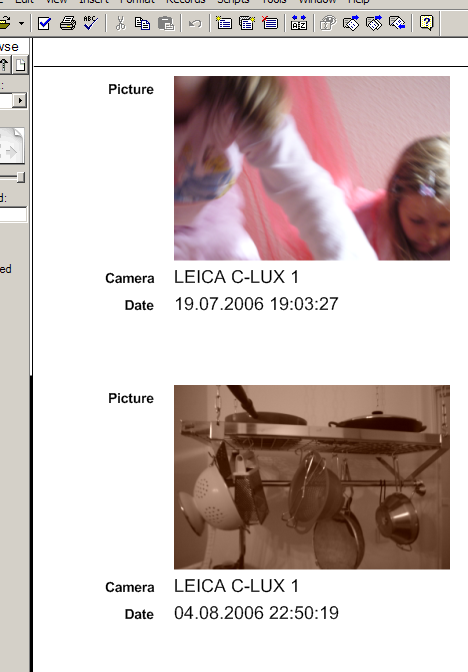

Abstract
FM-PLUGIN-TOOLS is a toolkit which enables you to write FileMaker plug-ins in Common Lisp. I personally think that with this library it is vastly easier to write plug-ins than with C++ or C. YMMV, of course.To use FM-PLUGIN-TOOLS you will need the Common Lisp implementation from LispWorks and of course FileMaker Pro (Advanced). You won't need a C or C++ compiler on Windows, though! (On OS X you will need Apple's Xcode which comes for free with every Mac.)
You can develop plug-ins for the Microsoft Windows platform or for Mac OS X (10.4 and higher) on Intel processors, but not on PowerPCs.
The code comes with a BSD-style license so you can basically do with it whatever you want.
Download shortcut: http://weitz.de/files/fm-plugin-tools.tar.gz.
You don't necessarily need to understand C or C++, but it helps if you can read C++ code. The documentation provided by FileMaker for plug-in authors is pretty scarce, and the FM-PLUGIN-TOOLS docs can't fill all the voids. Look at the C++ source code that comes with FileMaker to (hopefully) grasp more details.
You will need:
The list is also intended as a general forum for discussions about plug-in development with Common Lisp and to support plug-ins like RegexPlugIn or ExifPlugIn which were written with this toolkit.
Finally, the list is also a good choice if you want to be notified about future releases. It was made available thanks to the services of common-lisp.net.
If you want me to write custom FileMaker plug-ins for you, email me
privately, I might be available for consulting.
See my homepage for contact details.
So I chose not to include the bindings with FM-PLUGIN-TOOLS. Instead, a very simple parser is provided which will automatically create these bindings for you from the header files. In the rest of this section I will explain how to use it. My apologies for this little inconvenience, but I don't fancy fighting with lawyers for a product that I don't even charge money for...
Now for the good news: You need to do this only once! If a
new version of FM-PLUGIN-TOOLS is released, you can keep the
file fli.lisp that the parser created for you. (Well,
unless I made a mistake in the parser itself. So, keep your fingers
crossed... To be absolutely sure, compare the version number of
PREPARE-FM-PLUGIN-TOOLS - in prepare-fm-plugin-tools.asd - with the
previous one or check the file CHANGELOG.txt.)
Here's how it works:
fli.lisp.)
PREP:*FMX-EXTERN-LOCATION* to
a pathname
designator denoting the location of the FMXExtern.h
C header file. If you don't do this, you'll get a dialog
asking for the location.
PREP:PREPARE. It should
return :DONE when it's finished.
fli.lisp in your
FM-PLUGIN-TOOLS folder.
DEFPACKAGE
to modify the FM-PLUGIN-TOOLS package. That's OK, don't worry.)
A remark for the LispWorks experts: Yeah, in theory I could have used
the foreign
parser, but then you'd need a C compiler in order to make it work.
Plus, it is questionable whether this parser could cope with
FileMaker's C++ code.
To build the example plug-in you need to download and install (for
ASDF) a couple of open source Lisp libraries (see
file README.txt), and then you'll have to adjust the
corresponding values in the delivery
file deliver.lisp and the build
script build-plugin.cmd (build-plugin.command on OS X). Now just double-click the
build script - that should do the trick (hopefully).
Furthermore, you can study the source code
for RegexPlugIn which
was also written using FM-PLUGIN-TOOLS.
And please note that when this documentation was originally written FM-PLUGIN-TOOLS only worked on Windows. So, if you're seeing terms like DLL or Windows registry, they are now supposed to refer to (the corresponding equivalents in) OS X as well.
OK, let's start...
init.lisp in the
afore-mentioned example.
[Special variable]
*plugin-id*
The ID of the plug-in. A four-character creator code string - see FileMaker documentation. Note that they recommend that you register your creator code with Apple even if you're only writing Windows plug-ins. This ID will also be used as a prefix for all your plug-in function names.This variable must be customized.
[Special variable]
*plugin-name*
The name of the plug-in as it will be shown by FileMaker.This variable must be customized.
[Special variable]
*plugin-bundle-identifier*
Used as theCFBundleIdentifierfor the loadable bundles generated on OS X.This variable must be customized, but only on OS X. It is not defined on Windows.
[Special variable]
*plugin-help-text*
The help text for the plug-in to display in FileMaker's Preferences dialog box.This variable must be customized.
[Special variable]
*plugin-version*
The version number of the plug-in. Should be a list of at most four integers, e.g. (4 2 1) would correspond to version "4.2.1".This variable must be customized.
[Special variable]
*company-name*
The name of the (i.e. your) company which created the plug-in. It will be used for entries into the Windows registry and in the DLL version info.This variable must be customized.
[Special variable]
*copyright-message*
The copyright message for the DLL version info.This variable must be customized.
[Special variable]
*product-name*
Will only be used as the product name for the DLL version info. The default value isNIL. If no other name is set, the value of*PLUGIN-NAME*is used instead - seeSET-PRODUCT-NAME.
[Special variable]
*preferences-function*
A function designator for a 0-ary function to handle configuration options (in FileMaker's Preferences dialog box) for the plug-in user. The default value isNIL, and if you leave it like that, the plug-in will be marked as non-configurable (i.e. the Configure... button will be greyed out) by FileMaker. The example code shows a simple preferences function. For a more complicated example see the source code for RegexPlugIn.This variable will currently be ignored on OS X, i.e. Mac plug-ins can't have configuration dialogs.
[Special variable]
*init-function*
A function designator for a 0-ary function which is called when the plug-in is initialized - orNIL(the default) if you don't want to be called. An init function will typically restore values from the Windows registry - see example code.
[Special variable]
*shutdown-function*
A function designator for a 0-ary function which is called when the plug-in is shut down - orNIL(the default) if we don't want to be called. You can perform last-minute clean-up operations here if you want.Specifically, you must make sure that all Lisp processes started by your code (whether directly or through a callback) are finished before the plug-in is shut down. (See
MP:PROCESS-ALIVE-PandMP:KILL-PROCESS.)
[Special variable]
*enable-idle-messages*
FileMaker will send messages to the plug-in if it is idle. If the value of this variable isNIL(the default), these messages will simply be ignored. If it is notNIL,HANDLE-IDLE-MESSAGEwill be called instead. See also*GC-INTERVAL*.
[Generic function]
handle-idle-message idle-level => result*
This function will be called with the corresponding level when FileMaker is idle, but only if*ENABLE-IDLE-MESSAGES*is true. The default method does nothing and you should write methods specialized to specific idle levels to customize this behaviour. The return values of this function are ignored.
[Constants]
+k-fmxt-user-idle+
+k-fmxt-user-not-idle+
+k-fmxt-script-paused+
+k-fmxt-script-running+
+k-fmxt-unsafe+
These are the five different idle levels used by FileMaker. See the FileMaker documentation for details.
[Special variable]
*gc-interval*
If this value is notNILit should be a positive integerN. In this case, a full garbage collection (see LispWorks documentation for details) will be initiated from time to time but at most everyNseconds. This will only happen if*ENABLE-IDLE-MESSAGES*is true, though. The default is to collect every ten minutes.
Most of the objects below can be used as arguments to plug-in functions or as their return values. Locales, colors, and character styles are an exception, though - they are only used internally.
The individual classes and methods will be presented in the following
subsections. As a general rule, never create one of these
objects
with MAKE-INSTANCE,
always use the provided MAKE-FOO functions like MAKE-TEXT-OBJECT and so on.
Note: I haven't implemented all functions which are available to C++ programmers, only those that seemed useful to me. If you think that something important is missing, don't hesitate to ask for it.
LOCALE-OBJECTs
represent locales
and they are only used in one place - when the contents of
a DATA-OBJECT are set to
a TEXT-OBJECT or a string.
[Standard class]
locale-object
ALOCALE-OBJECTis a Lisp object which is a proxy for a FileMaker "Locale" object.
[Function]
make-locale-object &optional input-type => locale-object
Creates and returns aLOCALE-OBJECTwith the input typeinput-type.input-typeis a numerical value which determines which locale will be created, the default value is+K-TYPE-SYSTEM+.
[Constant]
+k-type-none+
+k-type-system+
+k-type-unicode-raw+
+k-type-unicode-standard+
+k-type-invalid+
+k-type-ar+
+k-type-bg+
+k-type-cat+
+k-type-catalog+
+k-type-ces+
+k-type-chi+
+k-type-chi+
+k-type-chi-stroke+
+k-type-chi-stroke+
+k-type-dan+
+k-type-deu+
+k-type-deu-dictionary+
+k-type-ell+
+k-type-eng+
+k-type-et+
+k-type-fa+
+k-type-fin+
+k-type-fin-fmi+
+k-type-fra+
+k-type-he+
+k-type-hi+
+k-type-hrv+
+k-type-hun+
+k-type-isl+
+k-type-ita+
+k-type-jpn+
+k-type-lt+
+k-type-lv+
+k-type-nld+
+k-type-nor+
+k-type-pol+
+k-type-por+
+k-type-ron+
+k-type-rus+
+k-type-slk+
+k-type-slv+
+k-type-spa+
+k-type-spa-traditional+
+k-type-sr+
+k-type-swe+
+k-type-swe-fmi+
+k-type-th+
+k-type-tur+
+k-type-ukr+
+k-type-vi+
These are the possible values for theinput-typeparameter toMAKE-LOCALE-OBJECT. See the FileMaker documentation for details.The availability of some of these input types depends on the version of FileMaker Pro you've created
fli.lispwith.
COLOR-OBJECTs represent
colors, obviously, with red, green, blue, and alpha channels. They
are only used together with character styles.
[Standard class]
color-object
ACOLOR-OBJECTis a Lisp object which is a proxy for a FileMaker "Color" object.
[Function]
make-color-object &key red green blue alpha => result
Creates and returns aCOLOR-OBJECTwith color channels corresponding to the integersred,green,blue, andalpha. The default value for all the keyword parameters is 255.
[Specialized accessors]
red (color-object color-object) => red
(setf (red (color-object color-object)) new-value)
green (color-object color-object) => green
(setf (green (color-object color-object)) new-value)
blue (color-object color-object) => blue
(setf (blue (color-object color-object)) new-value)
alpha (color-object color-object) => alpha
(setf (alpha (color-object color-object)) new-value)
These are accessors to get and set the individual channels of aCOLOR-OBJECT.
STYLE-OBJECTs represent
FileMaker's character styles. Each character in
a TEXT-OBJECT can have a
character style which controls aspects like the
character's font, its size or
its color - the stuff you usually deal with via FileMaker's
Format menu. In the following section we'll call these
individual aspects properties. (I don't know if that's the
official term in FileMaker.)
Note that for each character style you can set and enable/disable each property individually, i.e. you can have a style which only controls the size while another one is responsible for, say, the font and the face.
The source code for RegexPlugIn has some examples of the usage of character styles.
[Standard class]
style-object
ASTYLE-OBJECTis a Lisp object which is a proxy for a FileMaker "CharacterStyle" object.
[Function]
make-style-object &key font face size color => style-object
Creates and returns aSTYLE-OBJECTand sets and enablesfont,face,size, andcolorif provided.colorhas to be aCOLOR-OBJECT, the other keyword arguments are Lisp integers.
[Specialized accessors]
color-enabled-p (style-object style-object) => enabled-p
(setf (color-enabled-p (style-object style-object)) new-value)
face-enabled-p (style-object style-object) face => enabled-p
(setf (face-enabled-p (style-object style-object) face) new-value)
font-enabled-p (style-object style-object) => enabled-p
(setf (font-enabled-p (style-object style-object)) new-value)
size-enabled-p (style-object style-object) => enabled-p
(setf (size-enabled-p (style-object style-object)) new-value)
With these accessors you can check whether a certain property is enabled in a character style and you can enable or disable it -new-valueis always treated like a generalized boolean.Note that the
FACE-ENABLED-Paccessor is a bit different from the rest because you can obviously enable/disable each face individually.
[Method]
any-face-enabled-p (style-object style-object) => enabled-p
Checks whether any face ofstyle-objectis enabled.
[Method]
disable-all-faces (style-object style-object) => |
Disables all faces ofstyle-object.
[Method]
disable-all (style-object style-object) => |
Disables all properties ofstyle-object.
[Specialized accessors]
color (style-object style-object) => color-object
(setf (color (style-object style-object)) (new-value color-object))
face (style-object style-object) => face
(setf (face (style-object style-object)) new-value)
font (style-object style-object) => font
(setf (font (style-object style-object)) new-value)
size (style-object style-object) => size
(setf (size (style-object style-object)) new-value)
Accessors to get and set the corresponding properties ofstyle-object. Note that in the case of(SETF COLOR)new-valuehas to be aCOLOR-OBJECT.
[Constant]
+k-face-plain+
+k-face-bold+
+k-face-italic+
+k-face-underline+
+k-face-outline+
+k-face-shadow+
+k-face-condense+
+k-face-extend+
+k-face-strikethrough+
+k-face-small-caps+
+k-face-superscript+
+k-face-subscript+
+k-face-uppercase+
+k-face-lowercase+
+k-face-titlecase+
+k-face-word-underline+
+k-face-double-underline+
+k-face-all-styles+
These are constants that can be used asfaceparameters in the functions above. See the FileMaker documentation for details.
TEXT-OBJECTs represent text in
FileMaker. This is like a Lisp string but with
additional character styles. Methods are
provided to convert between text objects and strings, but you will
obviously lose the character styles if you do this.
[Standard class]
text-object
ATEXT-OBJECTis a Lisp object which is a proxy for a FileMaker "Text" object.
[Function]
make-text-object &optional string => text-object
Creates and returns aTEXT-OBJECTrepresenting the (Lisp) stringstring. The default value forstringis the empty string.
[Specialized accessor]
as-string (text-object text-object) &key position size => string
(setf (as-string (text-object text-object) ) new-value)
This accessor is used to convert between Lisp strings and text objects.new-valuemust be a Lisp string. Optionally, the reader can only return thesizecharacters beginning at positionposition. The default is to return the whole string, i.e.positionis0andsizeis set to+K-SIZE-END+.
[Method]
size (text-object text-object) => size
Returns the length (in characters) oftext-object.
Appends to the end oftext-objectthe part of sizesizestarting at positionpositionofother-text-object. The default value forpositionis0, the default value forsizeis+K-SIZE-END+. Returnstext-object.
[Method]
delete-text (text-object text-object) position &key size => text-object
Deletes the part oftext-objectof sizesizebeginning at positionposition. The default value forsizeis+K-SIZE-END+. Returnstext-object.
[Method]
insert-text (text-object text-object) (other-text-object text-object) &key position => text-object
Insertsother-text-objectat positionpositionoftext-object. The default value forsizeis+K-SIZE-END+. Returnstext-object.
[Method]
set-text (text-object text-object) (other-text-object text-object) &key position size => text-object
Setstext-objectto be the part of sizesizestarting at positionpositionofother-text-object. The default value forpositionis0, the default value forsizeis+K-SIZE-END+. Returnstext-object.
[Method]
get-style (text-object text-object) position => style-object
Returns the character style of the character at positionpositionoftext-object.
[Method]
set-style (text-object text-object) (style-object style-object) position size => text-object
Sets the character style of thesizecharacters oftext-objectbeginning at positionpositiontostyle-object. Returnstext-object.
[Method]
get-default-style (text-object text-object) => style-object
Returns the default character style oftext-object.
[Method]
remove-style (text-object text-object) (style-object style-object) => text-object
Removes the character stylestyle-objectfromtext-object. Returnstext-object.
[Method]
reset-all-style-buffers (text-object text-object) => text-object
Removes all characters styles fromtext-object. Returnstext-object.
[Constants]
+k-size-end+
+k-size-invalid+
These constants can be used as asizeparameter when working withTEXT-OBJECTs. See the FileMaker documentation for details.
FIX-PT-OBJECTs to proxy
them. Methods are provided to convert between these objects and Lisp numbers.
[Standard class]
fix-pt-object
AFIX-PT-OBJECTis a Lisp object which is a proxy for a FileMaker "FixPt" object.
[Function]
make-fix-pt-object &key val precision => result
Creates and returns aFIX-PT-OBJECToptionally representing the numberval(a Lisp number) with precisionprecision. The defaults forvalandprecisionare0and+K-DEFLT-FIXED-PRECISION+.
[Specialized accessor]
as-boolean (fix-pt-object fix-pt-object) => boolean
(setf (as-boolean (fix-pt-object fix-pt-object) ) new-value)
This accessor is used to convert between generalized Lisp booleans and FixPt objects.new-valuecan be any Lisp object.
[Specialized accessor]
as-integer (fix-pt-object fix-pt-object) => integer
(setf (as-integer (fix-pt-object fix-pt-object) ) new-value)
This accessor is used to convert between Lisp integers and FixPt objects.new-valuemust be a Lisp integer.
[Specialized accessor]
as-float (fix-pt-object fix-pt-object) => float
(setf (as-float (fix-pt-object fix-pt-object) ) new-value)
This accessor is used to convert between Lisp floats and FixPt objects.new-valuemust be a Lisp float.
[Specialized accessor]
precision (fix-pt-object fix-pt-object) => precision
(setf (precision (fix-pt-object fix-pt-object)) new-value)
Gets or sets the precision ofFIX-PT-OBJECT. See also+K-DEFLT-FIXED-PRECISION+.
[Constant]
+k-deflt-fixed-precision+
This constant can be used in(SETF PRECISION)orMAKE-FIX-PT-OBJECTto denote fixed precision.
DATE-TIME-OBJECTs.
The toolkit provides several different ways to get or set individual
parts of such an object.
Note: As far as I understand, FileMaker doesn't have a concept
of time zones, so
the corresponding Lisp functions don't use
the time-zone parameter when dealing
with universal
times.
[Standard class]
date-time-object
ADATE-TIME-OBJECTis a Lisp object which is a proxy for a FileMaker "DateTime" object.
Creates and returns a newDATE-TIME-OBJECT. Ifuniversal-timeis provided, the new object is set to the Lisp universal timeuniversal-time. Iftimeand/ordateare provided (themselvesDATE-TIME-OBJECTs), the corresponding parts of the new object are set accordingly. Likewise, if some or all values ofsecond,minute,hour,day,month, andyearare provided, they are used as expected. The three different ways to initialize the new object are mutually exclusive.
[Specialized accessor]
as-universal-time (date-time-object date-time-object) => universal-time
(setf (as-universal-time (date-time-object date-time-object)) new-value)
Returns the date and time represented bydate-time-objectas a Lisp universal time.
[Specialized reader and setf expansion]
as-second-minute-hour (date-time-object date-time-object) => second, minute, hour
(setf (as-second-minute-hour (date-time-object date-time-object)) (values second minute hour))
Gets or set as (as three values) the seconds, minutes, and hours represented bydate-time-object.
[Specialized reader and setf expansion]
as-day-month-year (date-time-object date-time-object) => day, month, year
(setf (as-day-month-year (date-time-object date-time-object)) (values day month year))
Gets or sets (as three values) the day of the month, month, and year represented bydate-time-object.
[Specialized accessor]
as-time (date-time-object date-time-object) => date-time-object
(setf (as-time (date-time-object date-time-object)) (new-value date-time-object))
Gets and sets the time of the day represented bydate-time-objectas anotherDATE-TIME-OBJECT.
[Specialized accessor]
as-date (date-time-object date-time-object) => date-time-object
(setf (as-date (date-time-object date-time-object)) (new-value date-time-object))
Gets and sets the date represented bydate-time-objectas anotherDATE-TIME-OBJECT.
[Specialized accessor]
as-seconds-since-epoch (date-time-object date-time-object) &optional as-fix-pt-p => seconds
(setf (as-seconds-since-epoch (date-time-object date-time-object)) (new-value integer))
(setf (as-seconds-since-epoch (date-time-object date-time-object)) (new-value fix-pt-object))
Gets or sets the seconds since the Unix epoch represented bydate-time-object. Ifas-fix-pt-pis true, the reader returns aFIX-PT-OBJECT, otherwise a Lisp integer.
[Specialized accessor]
as-seconds-since-midnight (date-time-object date-time-object) &optional as-fix-pt-p => seconds
(setf (as-seconds-since-midnight (date-time-object date-time-object)) (new-value integer))
(setf (as-seconds-since-midnight (date-time-object date-time-object)) (new-value fix-pt-object))
Gets or sets the seconds since midnight represented by the time part ofdate-time-object. Ifas-fix-pt-pis true, the reader returns aFIX-PT-OBJECT, otherwise a Lisp integer.
[Method]
get-second (date-time-object date-time-object) => second
get-minute (date-time-object date-time-object) => minute
get-hour (date-time-object date-time-object) => hour
get-day (date-time-object date-time-object) => day
get-month (date-time-object date-time-object) => month
get-year (date-time-object date-time-object) => year
These are obviously readers to get at the individual components ofdate-time-object.
BINARY-DATA-OBJECTs
to proxy these C++ objects. Streams are "mapped"
to vectors
of element
type (UNSIGNED-BYTE 8).
The example plug-in
uses BINARY-DATA-OBJECTs to
read Exif data from JPG images.
[Standard class]
binary-data-object
ABINARY-DATA-OBJECTis a Lisp object which is a proxy for a FileMaker "BinaryData" object.
[Function]
make-binary-data-object => result
Creates and returns a newBINARY-DATA-OBJECT.
[Method]
get-count (binary-data-object binary-data-object) => count
Returns the number of streams ofbinary-data-object.
[Method]
get-index (binary-data-object binary-data-object) data-type => index
Returns the index of the stream corresponding to the data typedata-type(a four-character Lisp string) ofbinary-data-object.
[Method]
get-size (binary-data-object binary-data-object) index => size
Returns the size of the stream with indexindexofbinary-data-object.
[Method]
get-data (binary-data-object binary-data-object) index &key offset amount result start => result
Returnsamountoctets of the contents of the stream with indexindexofbinary-data-objectbeginning at octetoffset(the default is0). Ifresultis provided, it must be a Lisp vector of element type(UNSIGNED-BYTE 8)with static allocation which will be filled with the corresponding data and returned. Ifresultis not provided, a large enough vector will be created. Ifresultis provided, the vector will be filled beginning from positionstart. Ifresultis not provided,startwill be ignored.
[Method]
get-type (binary-data-object binary-data-object) index => data-type
Returns the data type (as a Lisp string) of the stream with indexindexofbinary-data-object.
[Method]
get-total-size (binary-data-object binary-data-object) => total-size
Returns the total size ofbinary-data-object.
[Method]
add-data (binary-data-object binary-data-object) data-type data &key start end => binary-data-object
Adds data from the Lisp vector (of element type(UNSIGNED-BYTE 8))datato the stream of data typedata-type(a four-character Lisp string) ofbinary-data-object. Ifstartand/orendare provided, only the vector data fromstarttoendis used - the default is to use the whole vector. For large vectors, the operation is likely to be a tad faster ifdatawas allocated statically. Returnsbinary-data-object.
[Method]
remove-data (binary-data-object binary-data-object) data-type => binary-data-object
Removes the stream of data typedata-type(a four-character Lisp string) frombinary-data. Returnsbinary-data-object.
[Method]
remove-all (binary-data-object binary-data-object) => binary-data-object
Removes all streams frombinary-data-object. Returnsbinary-data-object.
[Method]
get-size-data (binary-data-object binary-data-object) => width, height
Returns as two values the width and height ofbinary-data-objectif it contains an image.
[Method]
add-size-data (binary-data-object binary-data-object) width height => binary-data-object
Sets the width and height of the image inbinary-data-object. Returnsbinary-data-object.
[Method]
get-fnam-data (binary-data-object binary-data-object) &optional as-text-p => file-path-list
Returns the file path list (that's how FileMaker calls it) of the special filename (FNAM) stream ofbinary-data-object. Ifas-text-pis true, the result will be aTEXT-OBJECT, otherwise a Lisp string.
[Methods]
add-fnam-data (binary-data-object binary-data-object) (file-path-list string) => binary-data-object
add-fnam-data (binary-data-object binary-data-object) (file-path-list text-object) => binary-data-object
Sets the file path list of the filename (FNAM) stream ofbinary-datatofile-path-list. Returnsbinary-data-object.
TEXT-OBJECT
or FIX-PT-OBJECT.
FM-PLUGIN-TOOLS
uses DATA-OBJECTs as proxies
for Data objects.
[Standard class]
data-object
ADATA-OBJECTis a Lisp object which is a proxy for a FileMaker "Data" object.
[Function]
make-data-object => result
Creates and returns a newDATA-OBJECT.
[Specialized accessors]
as-text-object (data-object data-object) => text-object
(setf (as-text-object (data-object data-object) &key source-locale native-type) text-object)
as-string (data-object data-object) => string
(setf (as-string (data-object data-object) &key source-locale native-type ) string)
as-fix-pt-object (data-object data-object) => fix-pt-object
(setf (as-fix-pt-object (data-object data-object) &key native-type) fix-pt-object)
as-integer (data-object data-object) => integer
(setf (as-integer (data-object data-object) &key native-type) integer)
as-float (data-object data-object) => float
(setf (as-float (data-object data-object) &key native-type) float)
as-boolean (data-object data-object) => boolean
(setf (as-boolean (data-object data-object) &key native-type) whatever)
as-date (data-object data-object) => date-time-object
(setf (as-date (data-object data-object) &key native-type) date-time-object)
as-time (data-object data-object) => date-time-object
(setf (as-time (data-object data-object) &key native-type) date-time-object)
as-timestamp (data-object data-object) => date-time-object
(setf (as-timestamp (data-object data-object) &key native-type) date-time-object)
as-binary-data (data-object data-object) => binary-data-object
(setf (as-binary-data (data-object data-object) &key force-binary-native-type) binary-data-object)
These are the various readers and writers to get and set the contents of theDATA-OBJECTdata-object.source-localeshould be aLOCALE-OBJECT(the default is a locale created with input type+K-TYPE-SYSTEM+),force-binary-native-typeis a generalized boolean (the default isT), andnative-typewill by default be the value correspoding to the new value. See the FileMaker documentation for more details about these keyword parameters.
[Constants]
+k-dtinvalid+
+k-dttext+
+k-dtnumber+
+k-dtboolean+
+k-dtdate+
+k-dttime+
+k-dttime-stamp+
+k-dtbinary+
These constants are usable asnative-typeparameters in the writers above.
[Function]
set-value value &key target result-type => target
Sets the contents of theDATA-OBJECTtargettovalue. Iftargetis not provided, the return value of the currently executing plug-in function (see*RESULTS*) is set.result-typecan be one of:BOOLEAN,:DATE,:TIME,:TIMESTAMP, or:UNIVERSAL-TIMEdescribing the intended FileMaker type ofvalue.result-typecan also beNILin which case the function tries to do the right thing depending on the Lisp type ofvalue- ifvalueis a string,targetis changed withAS-STRING, ifvalueis aTEXT-OBJECT,targetis changed withAS-TEXT-OBJECT, and so on. Ifvalueis a Lisp object for which there is no known conversion method, it is treated as a generalized boolean and converted to a FileMaker boolean.Finally,
result-typecan be:VOIDwhich means that this function does nothing. The function returnstarget.This function is used internally by the plug-in function machinery of FM-PLUGIN-TOOLS to set the return value of these functions and it is assumed that you'll rarely, if ever, need it. But just in case it is exported anyway.
[Method]
get-font-id (data-object data-object) font-name font-script => font-id
Returns the ID of the font identified by (the Lisp string)font-nameand the font scriptfont-script.
[Method]
get-font-info (data-object data-object) font-id => name, script
Returns as two values the name and the script of the font with the IDfont-id.
[Constants]
+k-native+
+k-other+
+k-invalid-font+
+k-oem+
+k-symbol+
+k-dingbats+
+k-roman+
+k-greek+
+k-cyrillic+
+k-central-europe+
+k-shift-jis+
+k-traditional-chinese+
+k-simplified-chinese+
+k-korean+
+k-turkish+
These constants can be used asfont-scriptparameters inGET-FONT-ID. See the FileMaker documentation for details.
[Generic accessor]
as-string thing &key => string
(setf (as-string thing &key) new-value)
This accessor is used to convert between Lisp strings and FileMaker objects.new-valuemust be a Lisp string. There are methods for text objects and for data objects.
[Generic accessor]
as-boolean thing => boolean
(setf (as-boolean thing &key) new-value)
This accessor is used to convert between generalized Lisp booleans and FileMaker objects.new-valuecan be any Lisp object. There are methods for FixPt objects and for data objects.
[Generic accessor]
as-integer thing => integer
(setf (as-integer thing &key) new-value)
This accessor is used to convert between Lisp integers and FileMaker objects.new-valuemust be a Lisp integer. There are methods for FixPt objects and for data objects.
[Generic accessor]
as-float thing => float
(setf (as-float thing &key) new-value)
This accessor is used to convert between Lisp floats and FileMaker objects.new-valuemust be a Lisp float. There are methods for FixPt objects and for data objects.
[Generic accessor]
as-date thing => date-time-object
(setf (as-date thing &key) new-value)
This accessor is used to convert between a full timestamp and the date part of it.new-valuemust be aDATE-TIME-OBJECT. There are methods for DateTime objects and for data objects.
[Generic accessor]
as-time thing => date-time-object
(setf (as-time thing &key) new-value)
This accessor is used to convert between a full timestamp and the time part of it.new-valuemust be aDATE-TIME-OBJECT. There are methods for DateTime objects and for data objects.
[Generic function]
size thing => size
Returns the size of either a text object or a character style.
FM-PLUGIN-TOOLS tries to hide most of the complexity of this process
from you by providing
the DEFINE-PLUGIN-FUNCTION
macro which is intended to be used more or less
like DEFUN
- you define a function that almost looks like a Lisp function and the
toolkit does the rest. Specifically, your function will have a lambda
list
with optional
and rest
parameters, and you can already declare the desired object type (and a
default value if appropriate) in the lambda list. Likewise, in most
cases it will suffice to simply return a value from your function like
in Lisp, and FM-PLUGIN-TOOLS will make sure the correct data is sent
to FileMaker.
In the rare cases where you want to access the argument vector or the
result pointer directly, you can use the functions NTH-ARG and
SET-VALUE or manipulate
the *RESULTS* object.
Errors occurring during the execution of a plug-in function are automatically caught and optionally logged.
[Macro]
define-plugin-function description lambda-list declaration* statement*
Defines a plug-in function.descriptionis either a string with the function prototype as it should be shown by FileMaker or a list where the first element is a prototype string followed by a plist with keyword parameters. FM-PLUGIN-TOOLS will automatically determine the name of the function from the prototype string by removing the argument list (if there is one). Furthermore, it will add the plugin ID and an underline to this name. So, if your prototype string is, say, "Foo( arg1; arg2 )" and your plugin ID is "Quux", then the function name reported to FileMaker will be "Quux_Foo". (This is the usual convention used for plug-ins.)The plist can have the properties (i.e. they keyword parameters)
:MAX-ARGS,:FLAGS, and:RESULT-TYPE.max-argsis the maximal number of arguments for the function. This parameter will only be used if there's a&RESTparameter in the lambda list, i.e. if the toolkit can't determine the maximal number of arguments itself.
result-typewill be interpreted as bySET-VALUE: If your function returnsvalue, then FM-PLUGIN-TOOLS will call(set-value value :result-type result-type)before it returns to FileMaker. As explained in the entry forSET-VALUE, in most cases you don't need to set the result type explicitly (leaving itNIL), asSET-VALUEwill try to do the right itself.
flagsis a boolean combination of flags describing the behaviour of the function - see FileMaker documentation. The default is to use the combination of+K-DISPLAY-IN-ALL-DIALOGS+and+K-MAY-EVALUATE-ON-SERVER+.
lambda-listis like a simplified version of a Lisp lambda list where only&OPTIONALand&RESTare allowed. Each parameter is either a symbol or a pair(NAME TYPE)wheretypeis interpreted as byNTH-ARG, i.e. it determines the desired type of the argument calledname. Optional parameters can also look like(NAME TYPE DEFAULT-VALUE)wheredefault-valueis of course the default value for this argument.
[Constant]
+k-may-evaluate-on-server+
+k-display-auto-enter+
+k-display-calc-fields+
+k-display-custom-functions+
+k-display-generic+
+k-display-in-all-dialogs+
+k-display-in-future1+
+k-display-in-future2+
+k-display-privileges+
+k-display-validation+
These are flags that can be used for theflagsparameter ofDEFINE-PLUGIN-FUNCTION. See the FileMaker documentation for their meaning.
[Function]
nth-arg n &optional type => argument
Returns theNth argument (starting to count at0) of the currently executing plug-in function.typedetermines how the argument should be returned and must be one of:TEXT(for aTEXT-OBJECT),:STRING(for a Lisp string),:FIX-PT(aFIX-PT-OBJECT),:INTEGER(a Lisp integer),:FLOAT(a Lisp float),:BOOLEAN(a Lisp boolean),:DATE,:TIME,:TIMESTAMP(DATE-TIME-OBJECTs),:UNIVERSAL-TIME(a Lisp universal time),:BINARY-DATA(aBINARY-DATA-OBJECT), orNIL(theDATA-OBJECTitself).If there are fewer than
Narguments, this function returnsNIL.It is expected that you'll almost never need to call this function, because
DEFINE-PLUGIN-FUNCTIONwill arrange to call it for you automatically if needed.
[Special variable]
*results*
During the execution of a plug-in function this variable is bound to the data object which will eventually contain the return value. Don't do anything with this variable unless you absolutely know what you're doing! Use the functionSET-VALUEif needed.
[Function]
boolean-value thing => boolean
ReturnsTifthingis notNIL,NILotherwise. This is a convenience function which you can use to ensure that the return value of a plug-in function is interpreted as a boolean without explicitly setting its result type.
deliver.lisp which already contains all the code
needed to do this. You'll just have to adjust a few special variables
(like the delivery level and where ASDF libraries are to be looked
for) to your local settings.
FM-PLUGIN-TOOLS also comes with a script build-plugin.cmd
(build-plugin.command on OS X)
that will do all the work of creating a Lisp DLL for you once you have
adjusted it to your local settings. Actualy, the
file deliver.lisp is set up in such a way that it is
expected to be invoked from the build script. Note that FileMaker
must not run when you copy the plug-in into
the Extensions folder.
Note: It might be the case that your
DLL requires
the Microsoft Visual
Studio runtime library msvcr80.dll. If you want to
make sure that the runtime library is available on the target machine,
you should probably provide an installer and use something like
Microsoft's Visual
C++ 2005 Redistributable Package.
[Function]
check-plugin-id => result
Checks whether*PLUGIN-ID*has a valid value. Should be called in a delivery script. The filedeliver.lispthe comes with FM-PLUGIN-TOOLS already contains a call to this function.
[Function]
set-product-name => set-product-name
Sets*PRODUCT-NAME*from*PLUGIN-NAME*if it hasn't been set explicitly. Should be called in a delivery script. The filedeliver.lispthe comes with FM-PLUGIN-TOOLS already contains a call to this function.
[Special variable]
*symbols-to-keep*
The list of symbols which must remain in the delivered DLL image. Only needed for delivery level 5. See:KEEP-SYMBOLS.FM-PLUGIN-TOOLS uses this variable internally. You are allowed to add symbols to this list and to remove symbols you've added yourself but you must not otherwise modify it. Modifications to this list obviously only make sense before the DLL is built, not at runtime.
The value of this variable is meaningless if you don't use the file
deliver.lispmentioned above.
[Methods]
evaluate (expression string) &optional result => result
evaluate (expression text-object) &optional result => result
Evaluates (as with FileMaker's "Evaluate" function) the expressionexpression. The result is stored in theDATA-OBJECTresultwhich is created if none is provided. The function returnsresult.
[Methods]
execute-sql (expression string) column-separator row-separator &optional result => result
execute-sql (expression text-object) column-separator row-separator &optional result => result
Executes the SQL expressionexpression(see FileMaker's "ExecuteSQL" which they describe as "experimental") using (for the return value) the column separatorcolumn-separatorand the row separatorrow-separatorboth of which must be characters. The result is stored in theDATA-OBJECTresultwhich is created if none is provided. The function returnsresult.
[Methods]
start-script file-name (script-name string) &key control parameter => |
start-script (file-name string) script-name &key control parameter => |
start-script (file-name text-object) (script-name text-object) &key control parameter => |
Starts the FileMaker script with the namescript-namein the filefile-name(both arguments can be Lisp strings orTEXT-OBJECTs).parametercan be aDATA-OBJECTor any other object that can be converted automatically to aDATA-OBJECTwithSET-VALUE. The default behaviour is to not useparameter, i.e. to hand over a CNULLpointer to FileMaker. The default value forcontrolis+K-FMXT-PAUSE+.See the FileMaker documentation for the meaning of the
controlandparameterarguments.
[Constants]
+k-fmxt-halt+
+k-fmxt-exit+
+k-fmxt-resume+
+k-fmxt-pause+
These constants can be used ascontrolarguments forSTART-SCRIPT. See the FileMaker documentation for details.
[Accessor]
plugin-preference path value-name => whatever
(setf (plugin-preference path value-name) new-value)
Stores and retrieves preferences (stored in the Windows registry) corresponding topathandname. See alsoUSER-PREFERENCE- theproductparameter there is automatically set to a value appropriate for your plug-ing.
[Macro]
remember-interface-geometry interface-class-name
Convenience macro which sets up a user defined interface class such that its geometry will automatically be stored in the Windows registry between different invocations of the plug-in. See alsoTOP-LEVEL-INTERFACE-GEOMETRY-KEY.
[Function]
version-string => string
Returns a string representation of the plug-in version.
[Function]
update-global-environment => |
If you call this function, a "global environment" will be set up (or updated). This environment can act as a fallback for functions likeEVALUATEwhich need an environment. Such a global environment is not needed for functions that are called by FileMaker as these will always have an environment set up for them automatically.This function must only be called from within functions that are called by FileMaker. It is protected with a lock, so you don't need to care about concurrency.
If you don't understand this explanation, you very likely don't need this function...
[Function]
fm-log control-string &rest format-args => |
This function writes data to the file denoted by*FM-LOGFILE*unless this value isNIL.control-stringandformat-argsare interpreted as byFORMAT.
[Special variable]
*fm-logfile*
Target file for thefm-logfunction. A pathname designator, orTfor a default location in the user's local application data folder, orNILfor no logging at all. The default value isT.
[Special variable]
*log-errors-p*
Whether errors occurring during the execution of a plug-in function should be logged usingFM-LOG. The default value isT.
[Special variable]
*log-backtraces-p*
Whether error log entries created due to*LOG-ERROR-P*should be followed by a backtrace. The default value isNIL.
[Function]
top-level-hook fn interface => result
A function which can be used as a top-level hook for CAPI interfaces to make them more robust against unhandled conditions. It will log the condition if*LOG-ERRORS-P*is true and then destroy the interface.See the reference entry for
CAPI:INTERFACE. See also the source code of RegexPlugIn for an example of its usage.
add-data
add-fnam-data
add-size-data
alpha
any-face-enabled-p
append-text
as-binary-data
as-boolean
as-date
as-day-month-year
as-fix-pt-object
as-float
as-integer
as-second-minute-hour
as-seconds-since-epoch
as-seconds-since-midnight
as-string
as-text-object
as-time
as-universal-time
binary-data-object
blue
boolean-value
check-plugin-id
color
color-enabled-p
color-object
data-object
date-time-object
define-plugin-function
delete-text
disable-all
disable-all-faces
execute-sql
evaluate
face
face-enabled-p
fix-pt-object
fm-log
font
font-enabled-p
get-count
get-data
get-day
get-default-style
get-fnam-data
get-font-id
get-font-info
get-hour
get-index
get-minute
get-month
get-second
get-size
get-size-data
get-style
get-total-size
get-type
get-year
green
handle-idle-message
insert-text
locale-object
make-binary-data-object
make-color-object
make-data-object
make-date-time-object
make-fix-pt-object
make-locale-object
make-style-object
make-text-object
nth-arg
plugin-preference
precision
red
remember-interface-geometry
remove-all
remove-data
remove-style
reset-all-style-buffers
set-product-name
set-style
set-text
set-value
size
size-enabled-p
start-script
style-object
text-object
top-level-hook
update-global-environment
version-string
*company-name*
*copyright-message*
*enable-idle-messages*
*fm-logfile*
*gc-interval*
*init-function*
*log-backtraces-p*
*log-errors-p*
*plugin-bundle-identifier*
*plugin-help-text*
*plugin-id*
*plugin-name*
*plugin-version*
*preferences-function*
*product-name*
*results*
*shutdown-function*
*symbols-to-keep*
+k-central-europe+
+k-cyrillic+
+k-deflt-fixed-precision+
+k-dingbats+
+k-display-auto-enter+
+k-display-calc-fields+
+k-display-custom-functions+
+k-display-generic+
+k-display-in-all-dialogs+
+k-display-in-future1+
+k-display-in-future2+
+k-display-privileges+
+k-display-validation+
+k-dtbinary+
+k-dtboolean+
+k-dtdate+
+k-dtinvalid+
+k-dtnumber+
+k-dttext+
+k-dttime+
+k-dttime-stamp+
+k-face-all-styles+
+k-face-bold+
+k-face-condense+
+k-face-double-underline+
+k-face-extend+
+k-face-italic+
+k-face-lowercase+
+k-face-outline+
+k-face-plain+
+k-face-shadow+
+k-face-small-caps+
+k-face-strikethrough+
+k-face-subscript+
+k-face-superscript+
+k-face-titlecase+
+k-face-underline+
+k-face-uppercase+
+k-face-word-underline+
+k-fmxt-exit+
+k-fmxt-halt+
+k-fmxt-pause+
+k-fmxt-resume+
+k-fmxt-script-paused+
+k-fmxt-script-running+
+k-fmxt-unsafe+
+k-fmxt-user-idle+
+k-fmxt-user-not-idle+
+k-greek+
+k-invalid-font+
+k-korean+
+k-may-evaluate-on-server+
+k-native+
+k-oem+
+k-other+
+k-roman+
+k-shift-jis+
+k-simplified-chinese+
+k-size-end+
+k-size-invalid+
+k-symbol+
+k-traditional-chinese+
+k-turkish+
+k-type-ar+
+k-type-bg+
+k-type-cat+
+k-type-catalog+
+k-type-ces+
+k-type-chi+
+k-type-chi+
+k-type-chi-stroke+
+k-type-chi-stroke+
+k-type-dan+
+k-type-deu+
+k-type-deu-dictionary+
+k-type-ell+
+k-type-eng+
+k-type-et+
+k-type-fa+
+k-type-fin+
+k-type-fin-fmi+
+k-type-fra+
+k-type-he+
+k-type-hi+
+k-type-hrv+
+k-type-hun+
+k-type-invalid+
+k-type-isl+
+k-type-ita+
+k-type-jpn+
+k-type-lt+
+k-type-lv+
+k-type-nld+
+k-type-none+
+k-type-nor+
+k-type-pol+
+k-type-por+
+k-type-ron+
+k-type-rus+
+k-type-slk+
+k-type-slv+
+k-type-spa+
+k-type-spa-traditional+
+k-type-sr+
+k-type-swe+
+k-type-swe-fmi+
+k-type-system+
+k-type-th+
+k-type-tur+
+k-type-ukr+
+k-type-unicode-raw+
+k-type-unicode-standard+
+k-type-vi+
This documentation was prepared with DOCUMENTATION-TEMPLATE.
$Header: /usr/local/cvsrep/fm-plugin-tools/doc/index.html,v 1.80 2010/07/22 09:36:50 edi Exp $